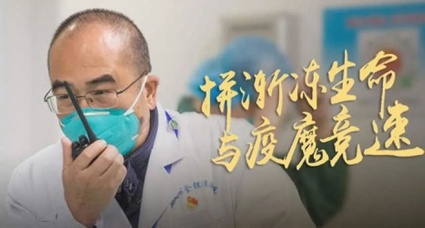
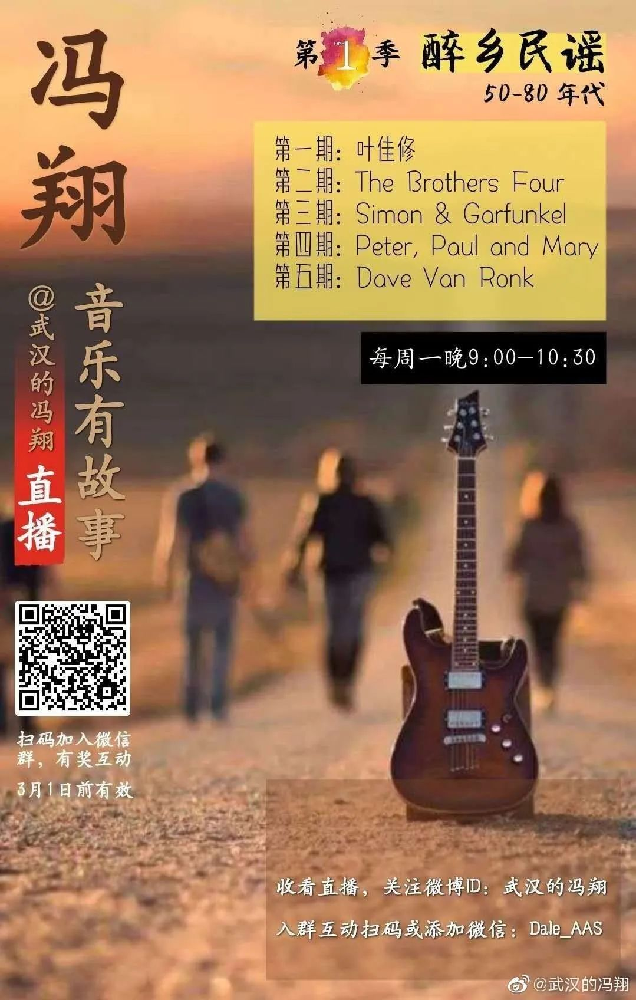

口述实录 | 香港女孩岑雅茵：大家都要平平安安，阿中哥哥加油！
原文链接 备份链接 总体而言，港人对待疫情，后来就没有内地那么紧张了。我妈妈讲，她觉得作为一个香港居民，自己最大的感受是彷徨。她抱怨道，在香港，没工开等于没饭吃了；公司起先通知放假到24号，何时复工再议，而现在仍然是等通知的状态。 …
我一度后悔自己离开了医生这个职业，他们那么缺人，我却不能跟他们一起冲上去。难过、绝望、内疚……
口述 | 冯 翔****
整理 | 陈 冰
……
冬天腊梅花，
夏天石榴花，
晴天都是人，
雨天都是伢。
过路的看风景，
住家的卖清茶。
……
2017年，一首《汉阳门花园》刷爆了武汉人的朋友圈。
2020年初，新冠病毒肆虐武汉三镇，居家隔离了一个月之久的武汉人再度听到这首《汉阳门花园》时，无不泪眼婆娑。
那些花儿啊、朵儿啊、伢儿啊，还有平日里厌烦的打牌的爹爹、闲扯的婆婆、抠脚的拐子、跳舞的嫂子……全都成了看不到的风景。
随之消失的，还有热干面的香气，鸭脖子的香辣。空气中久久散不去的，是一股消毒水的味道。
冯翔在汉阳门江边录《汉阳门花园》
作为一名前精神科医生，《汉阳门花园》的词曲作者、音乐人冯翔，比常人更能体会隔绝带给人的精神伤害到底有多大。他是金银潭医院院长张定宇的大学同班同学，一度，他为自己不能再度站在医疗前线与张定宇们一道并肩作战而深深地内疚、自责。
后来，他发现，他还可以用他一生挚爱的音乐，来抚慰人们焦躁不安的心。
这也是困于汉口家中的他，现在唯一能做的事。
“有现在的结果已经很好了”
1月21日，我去武汉市心理卫生中心开音乐治疗课，也差不多是和里面的病友做个联欢，毕竟快过年了嘛。当时去的时候，我根本没戴口罩，还是护士给了我一个。实际上，我当时唱着歌，已经感到一点联欢的气氛都没有了。护士在那教家属怎么样回家，怎么样洗手，应该怎么戴口罩。临走时，护士长问我要不要口罩，我说不需要，家里有。我当时就把它当做一个流感来防备的。
回家一看，我发现我买的口罩全部都是防雾霾的那种，没用。我就问当初要给我口罩的护士长，能给我一些口罩吗？她说，他们也没有了，要是需要的话，可以给我一个。我当时就意识到问题的严重性。
从1月22日开始，我们一家6口就坚决不出门了。只有需要采购基本生活物资的时候，才由我做好防护出门一趟。回来以后，赶紧全身消毒。尤其是吃的东西，把可能感染过病毒的食品拿回家，都不处理就吃了，或者拿清水稍微冲一下就吃了，绝对有问题！总之，这个病毒实在是太诡异了，也太强大了。我们普通人，在家里保证全家人的安全，就是最大的帮忙。

冯翔曾经工作过的地方——武汉市精神病医院。因为辖区内有一座六角凉亭，久而久之，“六角亭”就成了武汉市精神病医院的代名词
我是学医出身的，1986年毕业于同济医科大学，后来到人们熟知的“六角亭”精神病医院做了一名医生。因为从小就喜欢吹拉弹唱，一直想做个文艺青年。结果被家人“忽悠”，走上了靠医学拯救人性的道路。但是“六角亭”工作带给我的是深深的挫败感，2005年，我从医院“逃跑”了。
我北漂京城搞了十年的音乐艺术，最后又两手空空地回到了武汉。没想到，《汉阳门花园》让我红了。前几天，全球19个国家50位音乐人一起联手演唱了一首为武汉加油的中国歌曲《在路上》，我很荣幸作为武汉音乐人的代表，用英文演唱了歌曲的开头部分。
对于这次疫情，我自己一直都很难过。因为我是医生，更知道这个事情的难度。病毒没有时间让你去想啊，所以，就全世界任何一个国家来说，我们有全世界最好的动员能力、最大的防护用品生产规模，加上后来坚决的措施，有现在的结果已经很好了。
实际上，人类对于疫情根本没有做好准备，特别是精神上的。我们以为我们有经验了，经历过SARS、中东呼吸综合征（MERS），可是当疫情真正来临的时候，你会发现过往的那些经验都不管用了。
当你知道是这样的情况的时候，你就不会觉得自己特别不幸或者幸运。不是说我换个地方或者我换一种方法可能就好了。在这种环境下面，你就会遭受这样的灾难，这让人特别难过。

金银潭医院院长张定宇是冯翔的大学同班同学。张定宇一直是大家心中的“学霸医生”
还有一方面也让我感到很难过。医生护士冲在前头拼命。不是说英不英雄的问题，你只有一条路，就是当英雄。其实很早的时候，大概1月10号不到，我同学、金银潭医院的院长张定宇就开始每天拼命地扩大隔离病房了。金银潭就是个专业医院，不像协和、同济那种大医院，有的是钱，就那么点东西，那么点人，能扩大到多少？无论怎么拼命，病房一直不够，医护用品也一直不够，全院的医生全调动起来了，也没什么特别的防护，戴个口罩帽子就冲进病房治疗病人了，随时随地，你就有可能变成病人了。
我年前去的武汉市精神卫生中心也沦陷了。2月9日，媒体报道里面至少有大约50名患者和30名医务人员确诊感染了新冠肺炎。好些个我的前同事们，自己都被感染了。然后，在隔离病房里，他们就一边在做患者接受治疗，然后一边又做医生再去看病。有个到最后实在看不动了，自己的双肺全白了，成了重症患者。
我一度后悔自己离开了医生这个职业，他们那么缺人，我却不能跟他们一起冲上去。难过、绝望、内疚……
每次看那些新闻，我的心都要碎了，我一边听、一边伤感，眼泪不由自主地夺眶而出。人老了，为什么容易流泪，大概是因为眼睛代替了嘴巴所说不出的悲伤吧。
用音乐疗伤
是啊，我不能怪商家没有准备我想要的菜；不能怪邻居得了这个病，还传染了别人；不能怪政府封城了，封路了，封小区了，我们哪儿都不能去了……
所有的一切，我只能承受着。但是人承受这种东西一定是有极限的，只要有一天承受不下去了，就会开始怪某个人，怪所有人，怪这个世界。我媳妇儿说，你不能老这么颓废吧？总得干点能干的事情啊。

冯翔希望用歌声来疗伤
我想我不是搞音乐的嘛，然后我还学过音乐治疗。这种情况下，人一般到了晚上就特别亢奋。发帖，造谣，辟谣，互相争吵！要不我就给大家唱歌，让大家晚上能够安静下来，平复一点。实际上，心情烦躁的时候，听点民谣确实能缓解一下。因为民谣都是在讲故事 ，而且，基本上不会是晦涩难懂的故事。其次，民谣的音乐都是和口语有更强的相关性，它能让你听到一个“人”在跟你倾诉，而不是一个高高在上的“ICON”在展示。
所以，我就先试了一下微博直播。第一次我自己感觉很好，觉得自己安静下来了，怨天尤人的情绪也转移了。做了大概三四次之后，网易云音乐正好在做卧室音乐节，邀请我参加，和全国的音乐人一起，用音乐给大家疗伤。透过手机屏幕，我们就好像站在每个人的身边唱歌，所有的怨气竟然神奇地消失了。就在那短短的一个半小时里，我们每一个参与其中的人，似乎都获得了短暂的救赎。
我还参加了一个全国性质的心理援助项目，2月18日给方舱医院里面的医患做了一次讲座，讲一些关于音乐治疗的方法，告诉大家怎么用音乐这个工具让自己的情绪平复下来，或者说减缓自己焦虑紧张的情绪。在旋律、和声及节奏的语言之中,隐藏着控制我们情绪的密码，就像亚里士多德说的，“借由音乐，人们将感受到正确的情绪”。音乐可以引发我们体内的恩多芬大量释放，令人精神愉快，心情舒适。
我在这个课上边唱边说了一个半小时，一件特别感动我的事情发生了。
一个心理治疗师听完讲座以后，过来给我转账，说这是我的治疗费。她说这是她这么长时间以来，第一次觉得突然放松了，然后痛哭了一场。
是啊，这么长时间以来，大家一直处在疫情之中，整个状态都是绷着的。一旦疫情解除，绷紧的弦一下子松下来，就很容易出问题。这其实是一个次生灾害了，精神方面的援助需求会大量出现。
我还特别想说说逝者和他们的家庭。我虽然难过，还只是我的生活、情感在遭受灾难的影响，但那些无法回来的人们，还有他们的家庭所承受的痛苦，我们是不可能真正体会的。他们需要帮助，但现在他们还在继续挣扎着坚持着让家里剩下的人活下去。可能得等疫情过去，他们才会在回忆里一遍遍经受痛苦。他们真的需要帮助。
我现在也在准备，一旦这个事情结束了，我就必须去做心理援助的事情，有可能我还会直接回医院上班了。

现在，我每周一晚上9点在微博开直播，一个轻轻松松的系列，跟大家聊聊影响我的各种各样的音乐，这些音乐人的故事，然后唱他们的歌，也会唱我自己的歌，每次一个半小时。以后还可能把音乐治疗的内容放进去，做成另外一个系列。我还希望在听直播的人，能够把自己生活的点点滴滴变成歌！
微博直播，让我觉得起码我的生活又丰满起来了。对，我就在做我力所能及的事情。一方面，它给别人带来了好处。但是，更直接的，是给我自己带来了好处——我再也不用一天到晚自怨自艾的了。我也不用很内疚了，因为我其实是在另外一条很重要战线上——精神战线上和我的前同仁们一起战斗！
让我们一起用音乐来疗伤，去倾听生命的声音，去释放情感的力量。
我是武汉的冯翔，我在直播间等着你。

征集令
《新民周刊》现面向全国征集新冠肺炎采访对象和真实故事：
如果你是参与抗击新冠肺炎疫情的医护人员或其家属，我们希望聆听你的“战疫”故事，也希望传达你的诉求。
如果你是确诊、疑似患者本人或家属，我们希望了解你和家人如何“抗疫”的过程，让外界了解你的真实经历。
如果你是疫情严重地区的普通市民，我们希望展现你的乐观，并倾听你所需的帮助。
如果你是公共服务人员或各类捐助者，我们希望看到你的“最美逆行”，记录下你的无私。
……
抗击新冠肺炎疫情，我们诚征对疫情了解的社会各界人士，提供相关线索，说出你的故事，让我们用新闻留存这一切。
《新民周刊》新冠肺炎线索征集值班编辑联系方式（添加时请简要自我介绍）：
周一：应 琛 微信号：paulineying0127
周二：金 姬 微信号：gepetta
周三：黄 祺 微信号：shewen-2020
周四：周 洁 微信号：asyouasyou
周五：孔冰欣 微信号：kbx875055141
周六：吴 雪 微信号：shyshine1105
周日：姜浩峰 微信号：jianggeladandong
✳如你需要捐赠物资，可与以下两位工作人员联系:王勇：WangYong-SH 吴轶君：rommy150708（添加时请注明“捐物资”，方便工作人员快速通过您的申请，谢谢。）
新闻是历史的底稿，你们是历史的见证者。期待你的故事、你的线索！

▼
大家还都在看这些
▼
新民周刊所有平台稿件， 未经正式授权
一律不得转载、出版、改编或进行
与新民周刊版权相关的其他行为，违者必究


原文链接 备份链接 总体而言，港人对待疫情，后来就没有内地那么紧张了。我妈妈讲，她觉得作为一个香港居民，自己最大的感受是彷徨。她抱怨道，在香港，没工开等于没饭吃了；公司起先通知放假到24号，何时复工再议，而现在仍然是等通知的状态。 …
原文链接 备份链接 3月21日。 封城第59天。这么长时间了！ 昨天那么大的太阳，今天突然就阴了。下午还下了点雨。这时节的春雨，对于院子里的树以及花，都还是很需要的。前两三天，武大樱花盛开，树下空荡无人，估计是记者拍了一些照片，同学群里便 …
原文链接 备份链接 这是一种全新的病毒，还有很多未知。它代表了一种演进的公共卫生突发事件，我们还会在其他国家看到更多确诊病例。中国对传染病以及卫生突发事件的诊断、治疗和管理能力在过去20年得到了显著的提升。 文 |《财经》记者 江玮 发自 …
原文链接 备份链接 黄女士及其家人是如何“顺利完成进京全流程”的？当前是否存在更多的“黄女士”？这些令人疑惑的问题，有待一天之内即迅速成立的三个调查组，还公众合理合法的结论。 文 | 王仲昀 Anne 2月26日，北京发布的一例由武汉返京 …
原文链接 备份链接 7610 来源：正和岛 作者：叶青 02-28 1、数字 27日，农历二月初五。阴冷。小雨。27日，全国新增确诊病例327例，新增死亡病例44例（湖北41例，北京2例，新疆生产建设兵团1例），新增疑似病例452例。截 …